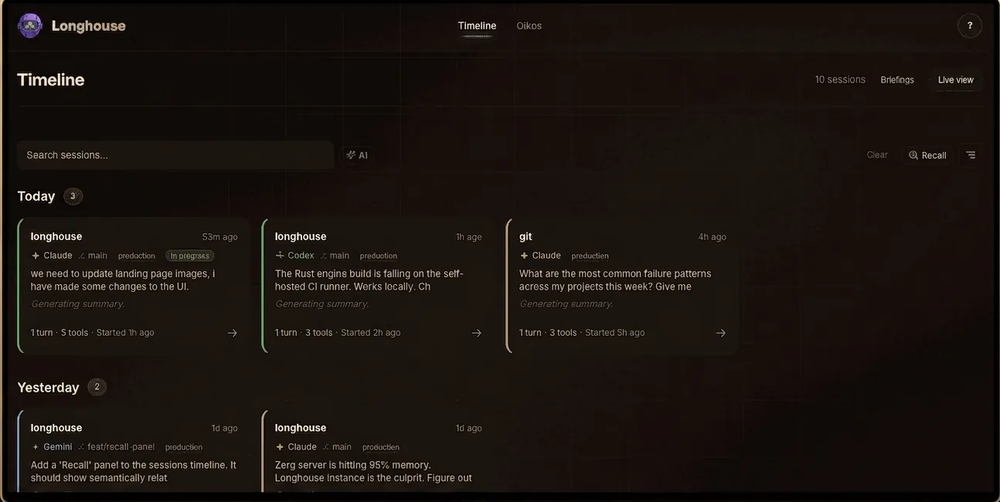
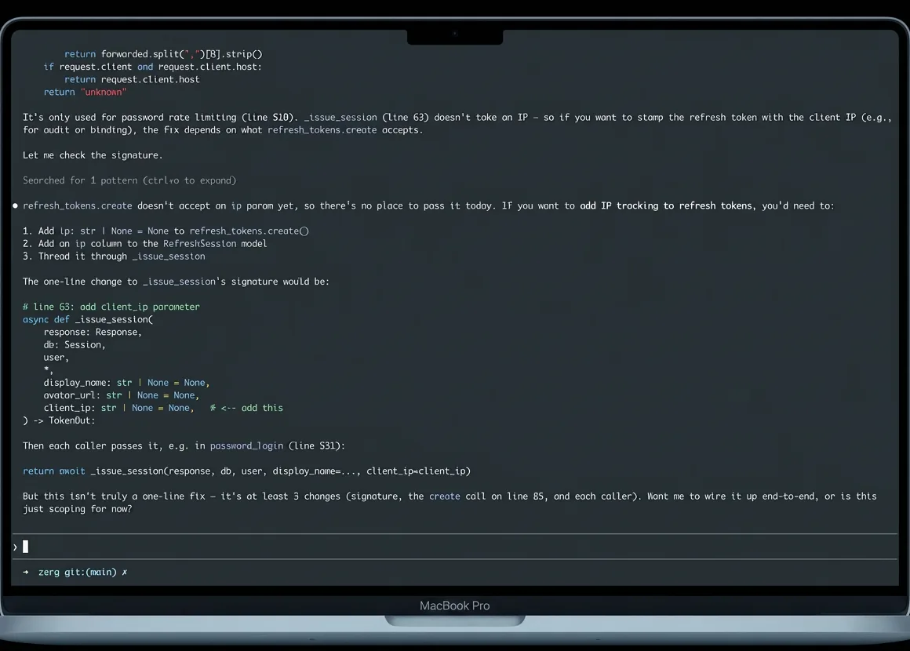
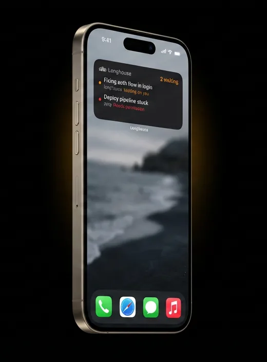
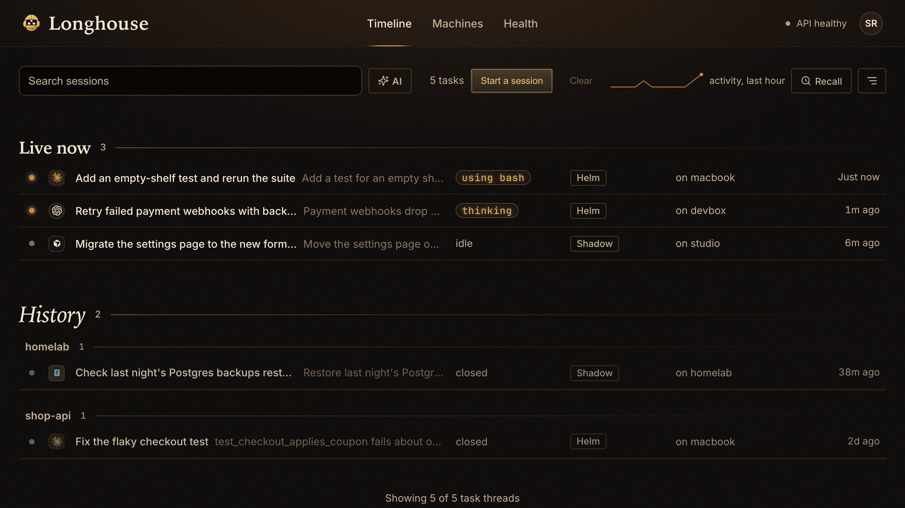

Self-hosted session control
One timeline for every Claude, Codex, and Gemini session. Find past work fast, inspect the raw session, and steer live work from browser, CLI, or API.

$ claude
→
Captured & indexed
→
On every device
Your sessions, everywhere
Longhouse captures every Claude, Codex, and Gemini session on your machine — searchable from the web, controllable from your pocket.


In your pocket, not just your tabs
Longhouse keeps every Claude, Codex, and Gemini session searchable on the web — and a home-screen widget away on your phone.
Mission control for agent sessions
Longhouse collects every Claude, Codex, and Gemini session from your machines — then lets you recall, inspect, and steer them from web, CLI, or phone.

Your sessions, everywhere
Longhouse captures every Claude, Codex, and Gemini session on your machine — searchable from the web, controllable from your pocket.
Self-hosted session control
Longhouse captures every Claude, Codex, and Gemini session — then lets you search, inspect, and steer them from browser or phone.
Self-hosted session control
Longhouse captures every Claude, Codex, and Gemini session — then lets you search, inspect, and steer them from browser or phone.
Self-hosted session control
Longhouse captures every Claude, Codex, and Gemini session from your machines — searchable on the web, one glance away on your phone.
$ claude
→
Searchable timeline
→
On your phone
Self-hosted session control
Longhouse captures every Claude, Codex, and Gemini session — then gives you a searchable timeline and a widget for your phone.
Scrollback, forgotten. Good luck finding what you ran last Tuesday.
Self-hosted session control
Longhouse pulls every Claude, Codex, and Gemini session off your machine — searchable on the web, glanceable on your phone.
Hundreds of sessions.
Scattered across machines.
Forgotten by tomorrow.
Self-hosted session control
Longhouse captures every Claude, Codex, and Gemini session from your machines — searchable on the web, one glance away on your phone.
Self-hosted session control
One timeline for Claude, Codex, and Gemini sessions. Find past work fast, inspect the raw session, and steer live work from browser, CLI, or API.